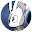
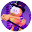

Reviews Page
 Mr. Smasher ★★★★★ - I love this game so much. This has to be my favorite Smash Bros game so far. I love this because of the characters, obviously. Most of my favorite video game franchises has come together. Zelda, Metroid, Pokemon, Sonic the Hedgehog, Street Fighter, Final Fantasy, and Banjo Kazooie. It's so nice to see all of these characters together in the same game. It's a once in a lifetime event if you ask me. I even love the new characters. Daisy, Ridley, King K. Rool, Ken, Hero, Banjo and Kazooie, Terry, Sephiroth, Pyra and Mythra, and Sora are all very awesome choices. I also like the modes they've added here. Of course you have your regular Smash mode with Normal Smash, Special Smash, and tourney. You also new and welcoming modes like Squad Strike is very cool. As for the single player modes I love what they did with Classic Mode. Making character specific instead of random. Although the boss at the end for most of the characters are Master and maybe Crazy Hand, it's awesome to see this. I love what they did with Stage Builder. It's so creative and very interesting. For example, you can make Poke Floats and things like that. This has lead to so many great creations. Speaking of, I like the video editor in there. Granted people use it for weird stuff, there's potential for interesting things you can do. Finally, World of Light. I really like it. I know it's not as great as Subspace Emissary, it's still very awesome. I really like the amount of references and easter eggs there in the game. I want you to experience it for your self. Some of the easter eggs are kinda crazy. At least one Metal Gear Solid spirit. Anyway, the characters they use for the spirits are so fighting. Here's an example I like. Morgana, the cat that's with Joker in his taunts, has Pikachu Libre as his spirit. The cool thing about this is that Pikachu and Morgana share the same Japanese voice actress Ikue Otani. (I know it's a DLC spirit, but it's still a good example.) I also love the bosses in the mode. They brought back the big metal guy from Brawl that Pokemon Trainer and Lucas fought. They even have Rathalos! Overall, this game is amazing. If this is the last Smash game then it was a darn good end.
Sayo Okulaja ★★★★★ - Easily One Of The Greatest Game Of All Time. I remember when they first announced a sneak peek of this game and MY GOD, was I literally out of my mind. I remember seeing the first leak of smash ultimate with Inkling as well as seeing some of the 64 smash Characters. We knew that a new smash game would be coming out in 2018. This was the smash game we’ve all been waiting for forever since games like smash brawl and smash 4 And smash Melee. The highest Played games on their consoles, and smash ultimate easily makes the guy one of the greatest games of all time. I never thought I would see the day of seeing some of my Favourite Characters return from their previous titles of where they were left out in the dark from being Snake, Pokemon Trainer And Pichu, as well as other fellows ice climbers, Young Link and Wolf. Wd also sawed a lot of changes to a lot of characters having been returned to their former glory (ones like Link with his breath of the wild look, and Ganondorf from Ocarina of time). We then get into the actual gameplay of the new characters that came in. One of the smash characters I was really hyped to see was one being Ridley. I never thought Ridley would be in smash since, as we all know, we thought he was too big in smash. But now, We could play as Ridley. We then Sawed King K Rool Coming into Smash, being one of the most requested Fighters and has come to smash. But the one fighter I was so hyped about coming to smash was Incineroar. I’ve always loved playing him in Pokémon sun and moon. But when he came to smash ultimate as well as Ken, I was literally Jumping Up and Down on my Bed. I never thought I’d seen the day that incineroar, being one of my favourite Pokémon, join smash. He even has that expression of John Cena, lol. Some of in games music are fantastic. Remixes, classic Themes as well as ones returning from the OG smash games as well as the epic life light theme that plays at the intro. We thought we would never get any more smash characters but after that, we got Piranha Plant, Joker (The best of the bunch), hero, then we got banjo and Kazooie (one of the most requested fighters in smash), Terry, Byleth(Though being the weakest of the bunch), min min, Steve(I was literally passing out of him), Sephiroth and then we got Pyra and Mythra, and we’ve still got more fighters to come. The game modes are Ridiculously fun being classic mode, Sprit board, and the world of light(though it can’t top all the hype of Subspace Emissary from smash brawl). My Only Complaint is The Online, sometimes I would be matching a spammy character, sometimes I’ll face against a laggy Match and sometimes matches that I literally can’t play. But anyway, this is definitely a must-play game. I’ve been playing this since launch and my main on this smash is joker. Still getting better in smash, but I’ve always loved this game from All of my Contend of my heart spirit. If you loved playing smash for your life if you have a full party with you at your place and if you have a switch, Definitely get this game it’s definitely worth a play. You Won't Regret it.
 Paul Benavidez ★★★★★ - This is the greatest game of all time.
This game is made for everyone. It’s not as fast as Melee, which is good, but faster than Wii U. This game has the greatest character roster in the history of forever, getting every character ever back, like my Brawl main Snake and Pichu. Not only that, but they have so many cool stages brought back and all the new ones are pretty cool too. My favorites are Wuhu Island, Spiral Mountain, KOF Stadium, Great Plateau Tower, Dracula’s Castle and Final Destination. Not only that, but you can make your own custom stages which is the best its ever been.
Let’s get back on the character roster, which is top notch. The entire series roster is back, with new fighters like Ridley, Inkling and Simon Belmont. While there are some I don’t like, looking at you Richter Belmont, but the DLC makes up for it with characters like Joker from Persona 5, Hero from Dragon Quest, Banjo and Kazooie (my main, guh-huh) Terry Bogard from Fatal Fury/KOF and then Byleth from Fire Emblem Three Houses. The second fighters pass has some cool characters like Min Min from ARMS and Minecraft Steve. The Roster has almost 90 characters, and that makes it the biggest crossover ever.
My ONLY complaint is the online. Especially the tournaments, which there are mostly 4 player vs matches with items. As a soon-to-be competitive player, this isn’t very good. However, the quick play is ok.
There are so many modes, like squad strike, tournament, smash down, and the most important, Home Run Contest. Then the Mii Fighter costumes, we have SANS UNDERTALE, who comes with the song Megalovania, Cuphead ( wish he was a full character), who comes with Floral Fury, Vault Boy from Fallout, Altair from Assassins Creed, Creeper and Pig from Minecraft, and Travis Touchdown from No More Heroes (wish he was a full character too).
Overall, my favorite game of all time, highly recommend it to anyone who hasn’t played it. 5 Stars.